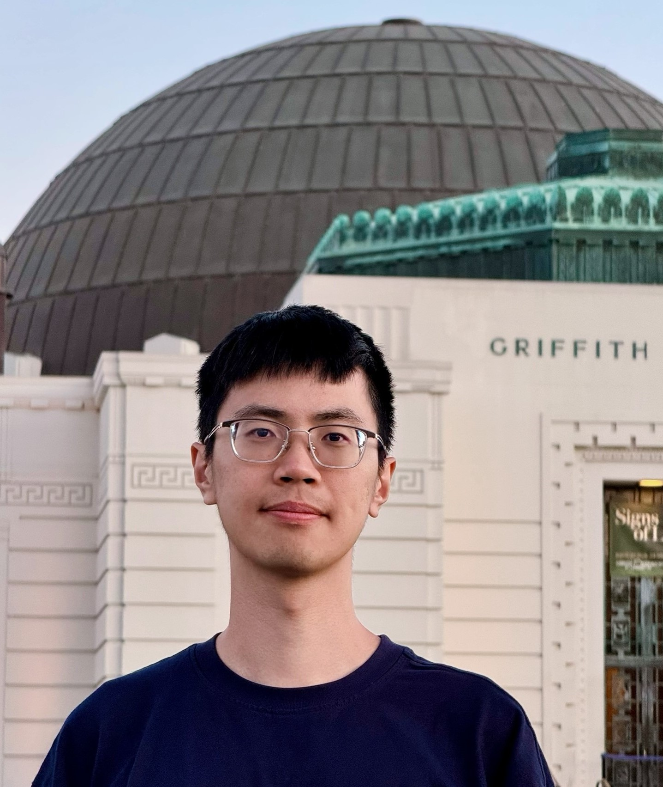

Jianyuan Guo (郭健元)
I am a 3rd-year PhD student in the School of Computer Science, The University of Sydney. I am supervised by Prof. Chang Xu. I obtained the B.S. and M.S. from the school of EECS, Peking University at 2017 and 2020, supervised by Prof. Chao Zhang. My main research interest lies in machine perception algorithms and their related applications, including efficient neural network (e.g., CNN and Transformer) in computer vision and natural language processing, self-supervised learning, neural architecture search, multimodal fusion, and LLM for AGI.
Email /
Google Scholar /
Github /
DBLP
Selected Publications
Data-efficient Large Vision Models through Sequential Autoregression.
Jianyuan Guo*, Zhiwei Hao*, Chengcheng Wang*, Yehui Tang, Han Wu, Han Hu, Kai Han, Chang Xu
ICML 2024 | paper |
code
Revisit the Power of Vanilla Knowledge Distillation from Small Scale to Large Scale.
Zhiwei Hao*, Jianyuan Guo*, Kai Han, Han Hu, Chang Xu, Yunhe Wang
NeurIPS 2023 | paper |
code
One-for-All: Bridge the Gap Between Heterogeneous Architectures in Knowledge Distillation.
Zhiwei Hao, Jianyuan Guo, Kai Han, Yehui Tang, Han Hu, Yunhe Wang, Chang Xu
NeurIPS 2023 | paper |
code
VanillaNet: the Power of Minimalism in Deep Learning.
Hanting Chen, Yunhe Wang, Jianyuan Guo, Dacheng Tao
NeurIPS 2023 | paper |
code
Hierarchical relational learning for few-shot knowledge graph completion.
Han Wu, Jie Yin, Bala Rajaratnam, Jianyuan Guo
ICLR 2023 | paper |
code
Hire-MLP: Vision MLP via Hierarchical Rearrangement.
Jianyuan Guo*, Yehui Tang*, Kai Han, Xinghao Chen, Han Wu, Chao Xu, Chang Xu, Yunhe Wang
CVPR 2022 | paper |
code
CMT: Convolutional Neural Networks Meet Vision Transformers.
Jianyuan Guo, Kai Han, Han Wu, Chang Xu, Yehui Tang, Chunjing Xu, Yunhe Wang
CVPR 2022 | paper |
code
An Image Patch is a Wave: Quantum Inspired Vision MLP (WaveMLP).
Yehui Tang, Kai Han, Jianyuan Guo, Chang Xu, Yanxi Li, Chao Xu, Yunhe Wang
CVPR 2022 | paper |
code
Brain-inspired Multilayer Perceptron with Spiking Neurons.
Wenshuo Li, Hanting Chen, Jianyuan Guo, Ziyang Zhang, Yunhe Wang
CVPR 2022 | paper
Learning efficient vision transformers via fine-grained manifold distillation.
Zhiwei Hao, Jianyuan Guo, Ding Jia, Kai Han, Yehui Tang, Chao Zhang, Han Hu, Yunhe Wang
NeurIPS 2022 | paper
Positive-Unlabeled Data Purification in the Wild for Object Detection.
Jianyuan Guo, Kai Han, Han Wu, Chao Zhang, Xinghao Chen, Chunjing Xu, Chang Xu, Yunhe Wang
CVPR 2021 | paper
Distilling object detectors via decoupled features.
Jianyuan Guo, Kai Han, Yunhe Wang, Han Wu, Xinghao Chen, Chunjing Xu, Chang Xu
CVPR 2021 | paper |
code
Transformer in Transformer.
Kai Han, An Xiao, Enhua Wu, Jianyuan Guo, Chunjing Xu, Yunhe Wang
NeurIPS 2021 | paper |
code
Hit-detector: Hierarchical trinity architecture search for object detection.
Jianyuan Guo, Kai Han, Yunhe Wang, Chao Zhang, Zhaohui Yang, Han Wu, Xinghao Chen, Chang Xu
CVPR 2020 | paper |
code
Ghostnet: More features from cheap operations.
Kai Han, Yunhe Wang, Qi Tian, Jianyuan Guo, Chunjing Xu, Chang Xu
CVPR 2020 | paper |
code
Beyond human parts: Dual part-aligned representations for person re-identification.
Jianyuan Guo, Yuhui Yuan, Lang Huang, Chao Zhang, Jin-Ge Yao, Kai Han
ICCV 2019 | paper |
code
Attribute-aware attention model for fine-grained representation learning.
Kai Han*, Jianyuan Guo*, Chao Zhang, Mingjian Zhu
ACM MM 2018 | paper |
code
A Survey on Vision Transformer
Kai Han, Yunhe Wang, Hanting Chen, Xinghao Chen, Jianyuan Guo, Zhenhua Liu, Yehui Tang, An Xiao, Chunjing Xu, Yixing Xu, Zhaohui Yang, Yiman Zhang, Dacheng Tao
IEEE T-PAMI 2022 | paper
OCNet: Object context for semantic segmentation
Yuan Yuhui, Lang Huang, Jianyuan Guo, Chao Zhang, Xilin Chen, Jingdong Wang
IJCV 2021 | paper
GhostNets on Heterogeneous Devices via Cheap Operations
Kai Han, Yunhe Wang, Chang Xu, Jianyuan Guo, Chunjing Xu, Enhua Wu, Qi Tian
IJCV 2021 | paper
Services
Student member in the AAAI Student Committee.
Conference Reviewers of CVPR, ICCV, ECCV, ICLR, ICML, AAAI, NeurIPS, etc.
Journal Reviewers of TPAMI, IJCV, TIP, Pattern Recognition, Neurocomputing, TMLR, etc.
Selected Awards
2022, Google PhD Fellowship
2022, Australian Government RTP Scholarship.
2020, Excellent Graduate, Peking University.
2018-2019, Award for Scientific Research, Peking University.
2017-2018, Award for Scientific Research & Benz Scholarship, Peking University.
2017, Graduate Scholarship, Peking University.
This website is based on the source code shared by
Dr. Yunhe Wang. Thanks.